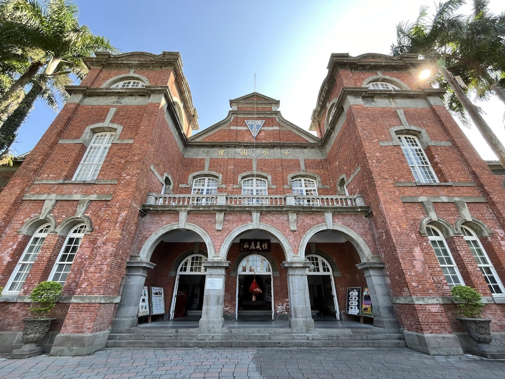

建國中學是位於台灣台北市的一所著名高級中學，創立於1946年，原為退伍軍人子弟學校，目的是照顧國軍將士的子女教育。學校位於台北市大安區，鄰近大安森林公園，環境優美，交通便利。
建國中學以其嚴格的學術標準和全面的教育制度聞名，提供包括自然科學、社會科學、語言藝術等多方面的課程。此外，學校重視學生全人發展，不僅學術表現卓越，體育、音樂和其他藝術領域也有相當的表現和成就。
建國中學的校園設施齊全，包括現代化的教室、實驗室、圖書館以及多功能的體育館等。學校也非常重視國際交流，與多國學校有交流合作，為學生提供海外學習和交流的機會。
此外，建國中學的畢業生多數能進入台灣及全球頂尖大學深造，學校在校友中有許多知名人士，包括學術界、政界、商界等多領域的領導者。
.
.
.